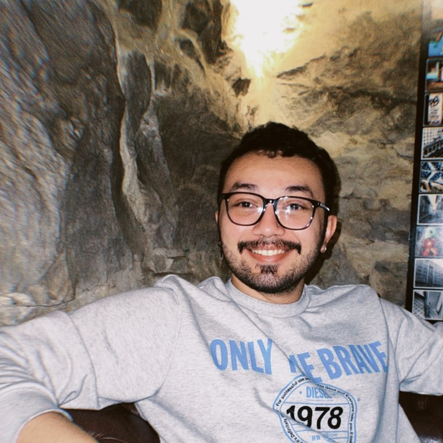

Julio Moises Lago de Leão
- Informações pessoais:
- Blumenau - SC
- (48) 99665-5495
- juliassone@gmail.com
- linkedin.com/juliasso/
- Informações Acadêmicas:
- Análise e Desenvolvimento de Sistemas
- Estácio de Sá | 2018-2020
- Comunicação Social - Mídia Eletrônica
- Estácio de Sá | Trancada em 2018
- Engenharia Mecânica
- Informações Profissionais:
- A. Angeloni & Cia. LTDA | Tec. em Manutenção de
Equipamentos de Informática
- Manutenção, instalação e configuração de computadores,
impressoras, terminais de consulta e PDV's na rede da
empresa, também administrava a vida e periodo fiscal das
ECF's da loja e farmácia.
- Blumenau - SC | 05/2022 - 08/2022
- Mundial Mix | Operador de Caixa
- Operador de caixa, estoquista e repositor de produtos.
- Florianópolis - SC | 11/2020 - 01/2021
- Cyber Drica
- Conexão, manutenção e instalação de programas em micros.
- Belém - PA | 2012 - 2018
- para observações especiais como, disponibilidade para mudança ou viagens , PDC , cursos ou
certificações:
- Cursos
- Manutenção de Computadores
- Microlins | 240 horas | Concluido em 08/2013
- Trilha de Python
- ProWay | 245 horas | Cursando.
- Go Language
- Aprendendo de forma independente.
- UX / UI Design
- Udemy | Concluido em 2022.